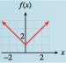

Subsection 4.1 Vertical Translations
The figure below shows the graphs of \(f (x) = x^2 + 4\text{,}\) \(g(x) = x^2 - 4\text{,}\) and the basic parabola, \(y = x^2\text{.}\) By comparing tables of values, we can see exactly how the graphs of \(f\) and \(g\) are related to the basic parabola.

| \(x\) | \(-2\) | \(-1\) | \(~0~\) | \(~~1~~\) | \(~2~\) |
| \(y=x^2\) | \(4\) | \(1\) | \(0\) | \(1\) | \(4\) |
| \(f(x)=x^2+4\) | \(8\) | \(5\) | \(4\) | \(5\) | \(8\) |
| \(x\) | \(-2\) | \(-1\) | \(0\) | \(1\) | \(2\) |
| \(y=x^2\) | \(4\) | \(1\) | \(0\) | \(1\) | \(4\) |
| \(g(x)=x^2-4\) | \(0\) | \(-3\) | \(-4\) | \(-3\) | \(0\) |
Each \(y\)-value in the table for \(f (x)\) is four units greater than the corresponding \(y\)-value for the basic parabola. Consequently, each point on the graph of \(f (x)\) is four units higher than the corresponding point on the basic parabola, as shown by the arrows. Similarly, each point on the graph of \(g(x)\) is four units lower than the corresponding point on the basic parabola.
The graphs of \(y = f (x)\) and \(y = g(x)\) are said to be translations of the graph of \(y = x^2\text{.}\) They are shifted to a different location in the plane but retain the same size and shape as the original graph. In general, we have the following principles.
Vertical Translations.
Compared with the graph of \(y = f (x)\text{,}\)
- The graph of \(~~y=f(x)+k,~~(k\gt 0)~~\) is shifted upward \(k\) units.
- The graph of \(~~y=f(x)-k,~~(k\gt 0~~)\) is shifted downward \(k\) units.
Example 4.1.1.
Graph the following functions.
- \(\displaystyle g(x) = \abs{x} + 3\)
- \(\displaystyle h(x) = \dfrac{1}{x}- 2\)
-
The table shows that the \(y\)-values for \(g(x)\) are each three units greater than the corresponding \(y\)-values for the absolute value function. The graph of \(g(x) = \abs{x} + 3\) is a translation of the basic graph of \(y = \abs{x}\text{,}\) shifted upward three units, as shown below.

\(x\) \(-2\) \(-1\) \(0\) \(1\) \(2\) \(y=\abs{x}\) \(2\) \(1\) \(0\) \(1\) \(2\) \(g(x)=\abs{x}+3\) \(5\) \(4\) \(3\) \(4\) \(5\) -
The table shows that the \(y\)-values for \(h(x)\) are each two units smaller than the corresponding \(y\)-values for \(y = \dfrac{1}{x}\text{.}\) The graph of \(h(x) = \dfrac{1}{x} - 2\) is a translation of the basic graph of \(y = \dfrac{1}{x}\text{,}\) shifted downward two units, as shown below.

\(x\) \(-2\) \(-1\) \(\dfrac{1}{2}\) \(1\) \(2\) \(y=\dfrac{1}{x}\) \(\dfrac{-1}{2}\) \(-1\) \(2\) \(1\) \(\dfrac{1}{2}\) \(h(x)=\dfrac{1}{x}-2\) \(\dfrac{-5}{2}\) \(-3\) \(0\) \(-1\) \(\dfrac{-3}{2}\)
Checkpoint 4.1.2.
- Graph the function \(f (x) = \abs{x} + 1\text{.}\)
- How is the graph of \(f\) different from the graph of \(y = \abs{x}\text{?}\)
- 
Translate \(y =\abs{x}\) one unit up.
Example 4.1.3.
The function \(E = f (h)\) graphed at right gives the amount of electrical power, in megawatts, drawn by a community from its local power plant as a function of time during a 24-hour period in 2002. Sketch a graph of \(y = f (h) + 300\) and interpret its meaning.
The graph of \(y = f (h) + 300\) is a vertical translation of the graph of \(f\text{,}\)
as shown at right. At each hour of the day, or for each value of \(h\text{,}\) the \(y\)-coordinate is 300 greater than on the graph of \(f\text{.}\) So at each hour, the community is drawing 300 megawatts more power than in 2002.

Checkpoint 4.1.4.
An evaporative cooler, or swamp cooler, is an energy-efficient type of air conditioner used in dry climates. A typical swamp cooler can reduce the temperature inside a house by 15 degrees.
Figure (a) shows the graph of \(T = f (t)\text{,}\) the temperature inside Kate’s house \(t\) hours after she turns on the swamp cooler. Write a formula in terms of \(f\) for the function \(g\) shown in figure (b), and give a possible explanation of its meaning.
\(g(t) = f (t) + 10\text{.}\) The outside temperature was \(10\degree\) hotter.